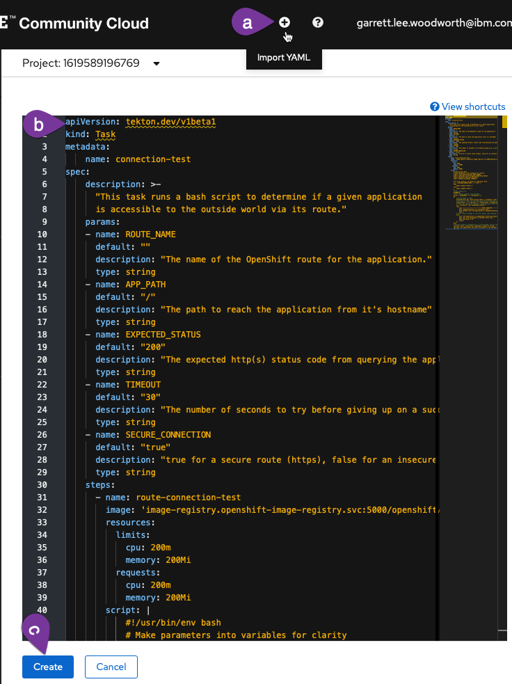
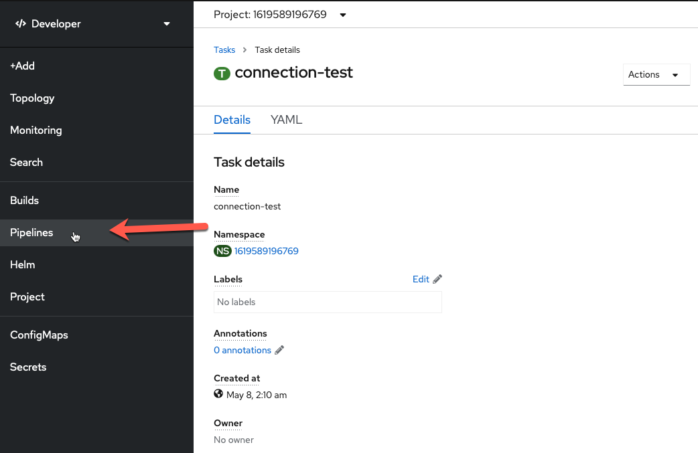
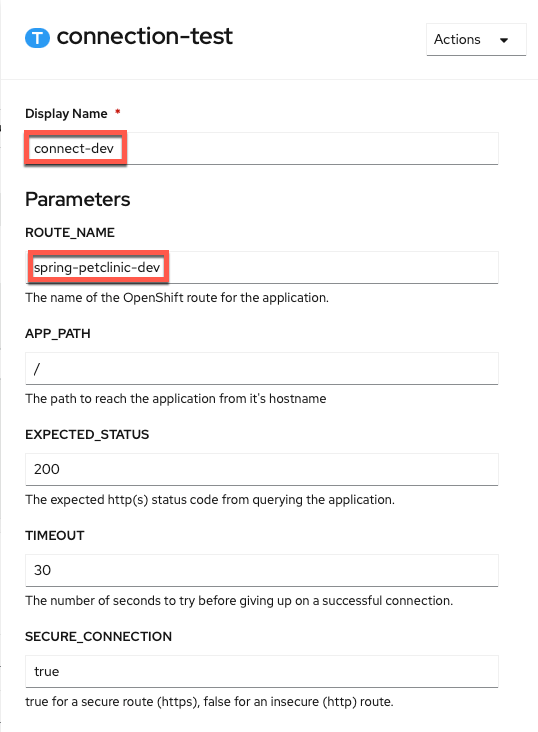
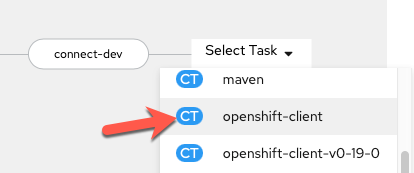

Automatically testing and promoting your application¶
Here you will edit your pipeline to test your application in development, clean up your development resources, promote your application to staging, and test it in staging.
Testing your application in the wild¶
During the build stage of your pipeline, you tested two things:
- That the pieces of your application worked (unit testing)
- That they worked together (integration testing)
Now, it's time to go a step further and automate testing that your application is working and accessible when deployed in a real (OpenShift) environment:
- Internally (within OpenShift)
- Externally (the outside world)
Internally (Within Kubernetes/OpenShift)¶
The first thing you need to test is that the application is alive and available from within your cluster (Kubernetes environment). This is important not only for when running the CI/CD pipeline, but also for any time your application is running (downtime is detrimental, especially in production).
This functionality is available in Kubernetes via probes. There are 3 different types of probes to test the different aspects of your application's availability:
Kubernetes Probes in Spring
In Spring there are built-in endpoints for Kubernetes probes. If you are interested in learning how to program these into a Spring application of yours in the feature, please take a look at Spring's official blog
-
Startup probes:
-
Activate first
-
Make sure an application is up and running (started up)
-
Free startup concerns/constraints from other probes
Here is the
startupProbefor the container running the PetClinic application:startupProbe: httpGet: path: /actuator/health/liveness port: 8080 periodSeconds: 10 failureThreshold: 30It simply queries (via localhost) PetClinic's liveness health endpoint. Once this returns successfully, you can be confident the application has started up and can begin to monitor the liveness and readiness of each container of each replica (pod) of your application throughout its lifecycle.
-
-
Liveness probes:
-
Make sure an application is actually running and not caught in a deadlock (it's alive)
-
Restart "dead" containers automatically with kubelet
-
Fix problems that may arise in long-running containers via the aforementioned restart
Here is the
livenessProbefor the container running the PetClinic application:livenessProbe: httpGet: path: /actuator/health/liveness port: 8080 periodSeconds: 10 failureThreshold: 3This looks almost identical to the
startupProbeabove other than having a much lowerfailureThreshold. ThestartupProbeis making sure the container of a given pod of your application's deployment is alive when it first starts up (It is allowing time for that startup to occur). On the other hand, thelivenessprobe above is making sure your application stays alive throughout its lifecycle. Therefore, it has a much lowerfailureThresholdto enable kubelet to quickly respond (restart the container) when the container becomes deadlocked. -
-
Readiness probes:
-
Check if each copy (replica) of an application is ready
-
Makes sure traffic goes only to replicas that are ready for it
-
Prevents user's from interacting with unready replicas (getting unnecessary errors)
Here is the
readinessProbefor the container running PetClinic:readinessProbe: httpGet: path: /actuator/health/readiness port: 8080 periodSeconds: 10It simply queries (via localhost) PetClinic's readiness health endpoint. This probe will let Kubernetes know when to send traffic to a PetClinic replica. When you send traffic to the application, only the available replicas will receive it. This means that replicas which aren't ready for traffic don't accidentally get it, preventing errors for the user.
-
These 3 probes serve to declare to Kubernetes the way your application (and the replicas that make it up) should behave, enabling the system to monitor and take action on your behalf (restarting the container or removing it's pod's endpoint from service) when the current state (the status) does not meet the desired state (your specification).
The rollout task you created before as deploy-dev will only complete once all desired replicas are ready, implying that both the startup (initial liveness) and readiness probes have successfully passed and all replicas of your application are initially alive and ready for business.
Testing External Connections¶
While making sure your application is internally up and running is important, at the end of the day you want to provide access to your users externally1.
This means it is important to also test the OpenShift route (the component providing the external connection) as part of your CI/CD pipeline to ensure it is correctly servicing web traffic external to your cluster2.
Create External Route Test Task¶
You will create a task to check the connection to your external route as part of your CI/CD pipeline.
-
Copy the
connection-testtask using the following definition (copy by clicking on the copy icon in the top right of the box below):2. Create theapiVersion: tekton.dev/v1beta1 kind: Task metadata: name: connection-test spec: description: >- "This task runs a bash script to determine if a given application is accessible to the outside world via its route." params: - name: ROUTE_NAME default: "" description: "The name of the OpenShift route for the application." type: string - name: APP_PATH default: "/" description: "The path to reach the application from it's hostname" type: string - name: EXPECTED_STATUS default: "200" description: "The expected http(s) status code from querying the application." type: string - name: TIMEOUT default: "30" description: "The number of seconds to try before giving up on a successful connection." type: string - name: SECURE_CONNECTION default: "true" description: "true for a secure route (https), false for an insecure (http) route." type: string steps: - name: route-connection-test image: 'image-registry.openshift-image-registry.svc:5000/openshift/cli:latest' resources: limits: cpu: 200m memory: 200Mi requests: cpu: 200m memory: 200Mi script: | #!/usr/bin/env bash # Make parameters into variables for clarity export route_name="$(params.ROUTE_NAME)" export expected_status="$(params.EXPECTED_STATUS)" export app_path="$(params.APP_PATH)" export timeout="$(params.TIMEOUT)" export secure_connection="$(params.SECURE_CONNECTION)" # If true, http(s), if false (or otherwise) http if [ "${secure_connection}" == "true" ] then export header="https://" echo "Using secure https connection..." else export header="http://" echo "Using insecure http connection..." fi # Start timer at 0 SECONDS=0 # Once timeout reached, stop retrying while [ "${SECONDS}" -lt "${timeout}" ]; do # Get hostname of route hostname="$(oc get route ${route_name} -o jsonpath='{.spec.host}')" # Get http(s) status of web page via external connection (route) status=$(curl -s -o /dev/null -w "%{http_code}" "${header}${hostname}${app_path}") # Print test completion message if expected status code received if [ "${status}" -eq "${expected_status}" ] then echo "---------------------------TESTS COMPLETE---------------------------" echo "Congratulations on a successful test!" echo "Please visit the application at:" echo echo "${header}${hostname}${app_path}" exit 0 # Print failure message if incorrect status code received + retry else echo "The application is unexpectedly returning http(s) code ${status}..." echo "It is not available to outside traffic yet..." echo "Retrying in 5s at:" echo echo "${header}${hostname}${app_path}" sleep 5 fi done # Redirect output to standard error, print message, and exit with error after timeout >&2 echo "Error, failed after ${timeout} seconds of trying..." >&2 echo "The application was never accessible to the outside world :(" exit 1connection-testTaska. Click
Import YAMLto bring up the box where you can create Kubernetes resource definitions from yamlb. Paste the
connection-testTask into the boxc. Scroll down and click create to create the
connection-testTask
You should now see the created connection-test Task. Navigate back to the Pipelines section of the OpenShift UI and go back to editing your pipeline.

Add External Route Test Task to Pipeline¶
-
Add a sequential task after
deploy-dev. When youSelect Task, choose theconnection-testtask.
-
Configure
connection-testtaskThe only values you need to change are the
Display Nameand theROUTE_NAME(copy and paste boxes below image):
Display Name
connect-devROUTE_NAME
spring-petclinic-dev -
Save pipeline
Your current pipeline builds and test your application, creates a docker image for it, deploys it to the development environment, and ensures that the application is working both internally and externally. In other words, once your application successfully completes the current pipeline, you can be confident in it and be ready to move to staging3.
Deploy Staging¶
Moving to the staging environment means spinning up your application in that environment (with parameters relevant for it) and testing it there. Given that this is all using containers, you can easily free up the development resources that have successfully completed and then spin up the new resources in your staging environment.
Remove Dev¶
Your first Task will mirror the cleanup-resources task at the beginning of your pipeline but cleanup just the dev resources using the env=dev label selector.
-
Go back to editing your pipeline via
Actions -> Edit Pipeline
-
Add a
Tasksequentially at the end of the pipeline (afterconnect-dev) using theopenshift-clientClusterTask.
-
Configure the
Taskwith the following values (copy and paste boxes below image):
Display Name
cleanup-devSCRIPT
oc delete deployment,cm,svc,route -l app=spring-petclinic,env=dev --ignore-not-foundand an empty
ARGSvalue.No help please!
Make sure
helpis deleted from theARGSsection (it will be greyed out once deleted) or bad things will happen (i.e. the help screen will come up instead of the proper command running).
Add Staging¶
You will use your existing kustomize task to deploy the staging configuration for your PetClinic application in a new kustomize-staging task. Customizations for staging PetClinic include adding a staging environment label, name suffix, change cause, and staging environment variables for your application. You could deploy to a separate project or cluster altogether as well as change replicas or add pod autoscalers in a similar manner (depending on your use case) for different environments.
-
Add a
kustomizetask sequentially to the end of your current pipeline (aftercleanup-dev)
-
Configure the
Taskwith the following values (copy and paste boxes below image):
Display Name
kustomize-stagingRELEASE_SUBDIR
overlay/stagingSCRIPT
kustomize edit set image spring-petclinic=$(params.IMAGE_NAME)-minimal:$(params.COMMIT_SHA) -
Savecurrent pipeline edit and then switch toYAMLfrom pipeline menu.
Why are you editing yaml directly?
Workspacesare more versatile than traditionalPipelineResourceswhich is why you are using them. However, as the transition to workspaces continues, the OpenShift Pipeline Builder doesn't support editing theWorkspacemapping from a pipeline to a task via the Builder UI so you have to do it directly in the yaml for now. -
Add workspace to
kustomize-stagingtaskFind the
kustomize-stagingand add the following workspace definition:workspaces: - name: source workspace: workspace
Save the update

Note
After the save message above appears you can then proceed to
Cancelback to the pipeline menu.
Rollout Staging¶
-
Edit the pipeline again and add a
deploy-stagingtask with theopenshift-clientClusterTask
-
Configure the task with the following parameters4 (copy and paste boxes below image):

Display Name
deploy-stagingSCRIPT
echo "$(params.GIT_MESSAGE)" && oc rollout status deploy/spring-petclinic-stagingNo help please!
Make sure
helpis deleted from theARGSsection (it will be greyed out once deleted) or bad things will happen (i.e. the help screen will come up instead of the proper command running).
Add External Route Test Task to Pipeline¶
-
Add a sequential task after
deploy-staging. When youSelect Task, choose theconnection-testtask.
-
Configure
connection-testtaskThe only values you need to change are the
Display Nameand theROUTE_NAME:Display Name
connect-stagingROUTE_NAME
spring-petclinic-staging
-
Save pipeline

Summary¶
Congratulations! You have built a pipeline that tests your PetClinic application, creates a docker image for it, deploys it to the development environment with dev configuration, ensures that the application is working both internally and externally, cleans up the development environment, deploys it to the staging environment with staging configuration and then makes sure it is working both internally and externally5.
tl;dr
You now have the I/D (Integration/Deployment) in CI/CD6.
-
For different environments like dev and test, this may be different groups external to your Kubernetes environment (cluster), though internal to the organization itself and accessing the endpoints via a VPN or internal network. Production is likely when external connection via an organization's real website would happen. The type of external connection (via a VPN or public connection) has little impact on the Kubernetes resources given a route will be used for all of those types of external connections (the most important thing is that the route you are testing is available to you [the tester] from where you are). ↩
-
You may think to yourself that you can't test an external connection from inside your cluster. However, by using the route you are causing the traffic to go "outside" the cluster's networking to reach the load balancer and then back "inside" via the route, explicitly testing the external connection and making sure that it indeed works. This just tests that the route works, not that the dns/hostname is available generally on the internet or private enterprise subnet (depending on environment). Internet / subnet dns resolution is a different more general problem for your networking team (or cloud) to ensure for all of your applications using that network. ↩
-
You could create more extensive tests to make sure that the pages are rendering correctly (besides just returning a proper status code). However, that is beyond the scope of the lab and this at least makes sure requests are successfully sent and returned via an external route, which is good enough for the lab's purposes. ↩
-
This mirrors the
dev-deploytask which waits for the dev release to rollout but uses theSCRIPTfield for everything vs.ARGS. ↩ -
You could clean up the staging environment at the end of the run but choose not to so that the user can interact with it between runs. You could also clean up or use a separate MySQL instance for staging but due to limited resources in your environment you have chosen not to add this extra component. ↩
-
You'll add the double
Cs in the next section by connecting it to GitHub. ↩